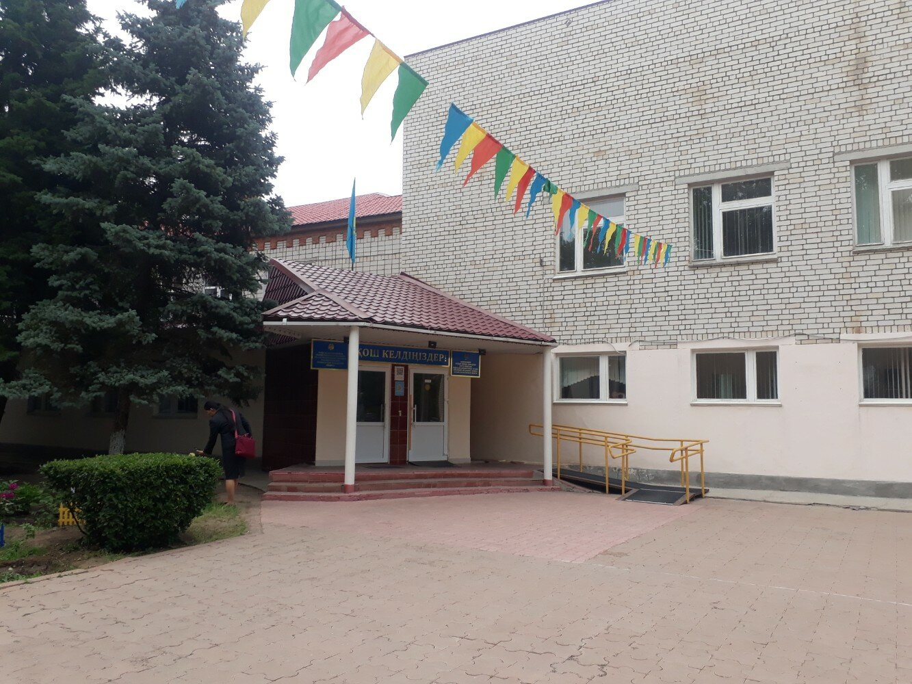

My School Life

I changed schools many times. But for the last 6 years I studied at the same school. Unforgettable years of school life were spent at school №41.
This is not just a school, but a lyceum school. The level of education is good quality.